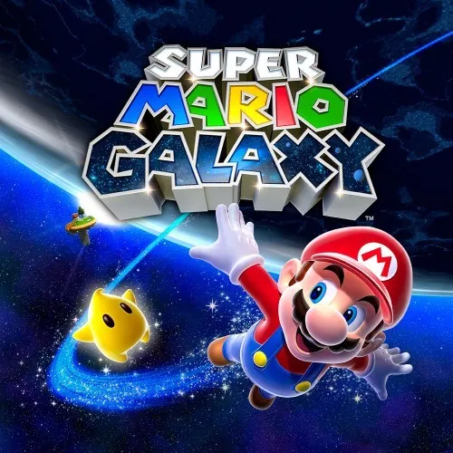
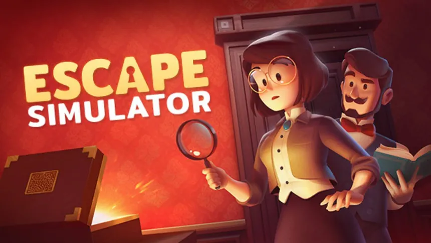

Games I enjoy
I've played a lot of games and this is my list of some of my favorites with a short summary of each
Omori
Omori is a game that I watched one of my friends play first before I tried it and I was instantly hooked
You play as Omori and go through an adventure with seemingly random cuts of the story into something deeper.
If you like games that have hidden levels of lore that you dig through, you'll definitely like this. The music in this game is phenominal.
There are also different routes in the game that you could explore
I have over 180 hours on the game trying to unlock all the achievements with 76% of them complete
Mario Galaxy
I grew up on the Mario franchise and Mario Galaxy will always be my favorite and the best game to come back to.
It's nostalgic, it introduces the best princess of the three, Rosalina, introduces many new mechanics that are brought back in later games, and overall is a game that is like no other.
I've played through it many times, at least 3 times, and it never gets boring. The music is also amazing.
Escape Simulator
Escape Simulator is exactly what you would think it is. Solving an escape room but in a game.
There's many maps that come with the game as well as maps that you can download that are made by other people so there's always some new to do.
It's multiplayer as well which makes it more fun to play with others. There's hints if you ever need help and it genuinely does make you think.